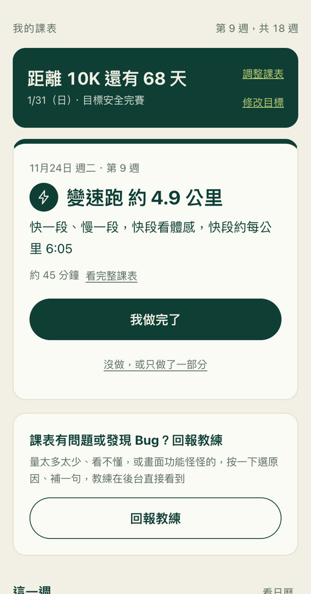
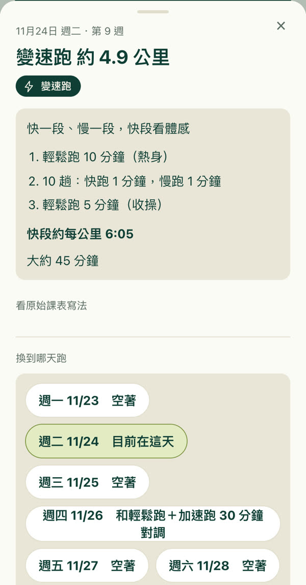
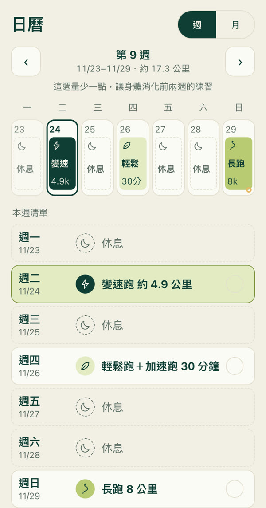
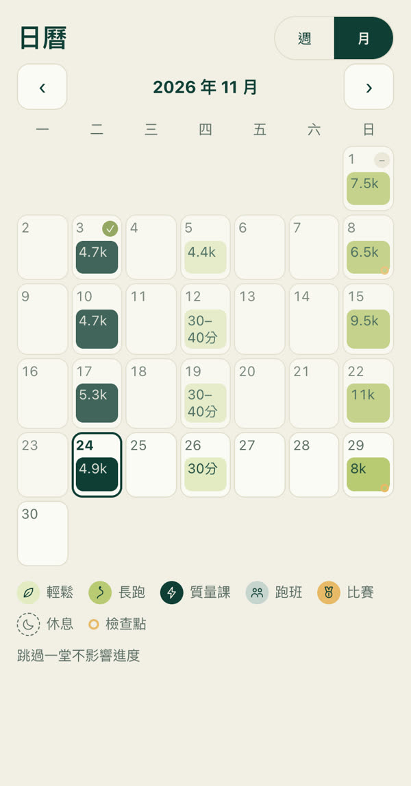
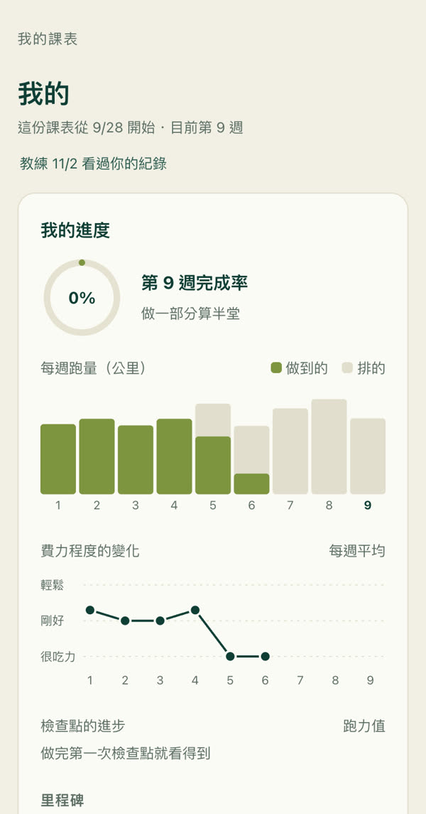
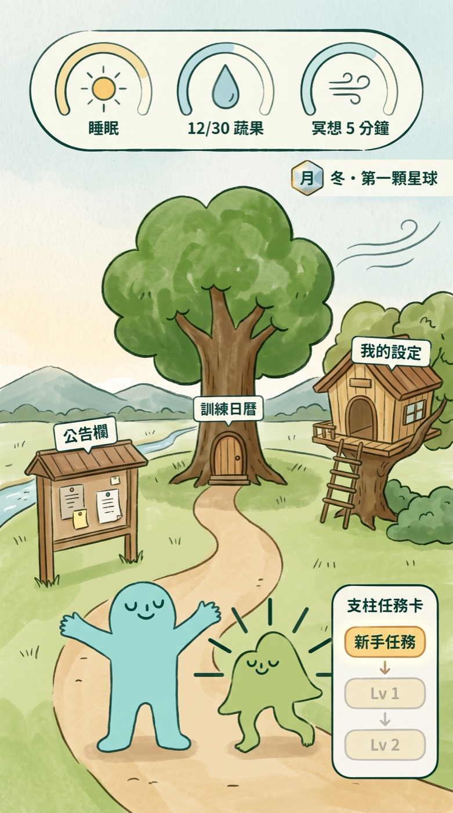
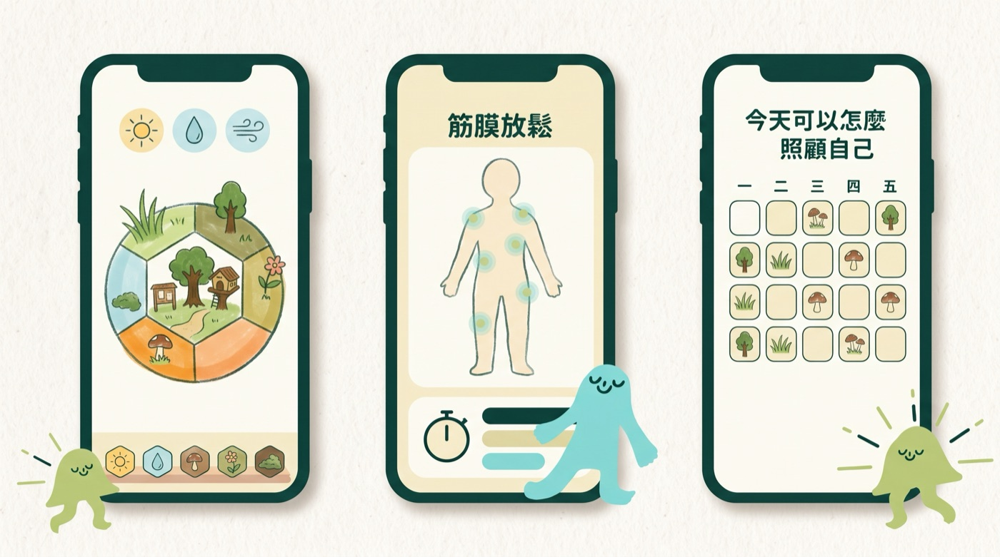
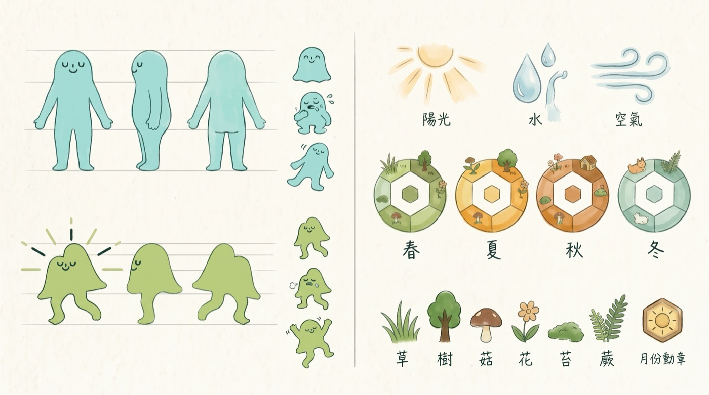

① 個人化課表工具
已完成 8 到 9 成，持續進行中教你如何安排適合自己強度的跑步訓練
剩下的是讓功能更進階，例如目標賽事超過一場等，更複雜的設定
已經有超過 30 位同學在使用，訓練內容相當完整 對初中階跑者來說，是非常足夠且好用的工具
月訂閱比較適合常有新消息、 需要高頻率更新的內容 而我現在要做的，是可以一直用下去的完整系統，是陪伴型的
我想要做出真正可以 「持續給予幫助」的系統工具 並且持續優化，更新這個系統
而不是看完就忘，或想起來又找不到在哪的零散課程
就是要讓大家可以在一個系統裡面 完整知道怎麼照顧自己 也就是我的全人訓練的六支柱
所以它會有個人化的課表安排 這個課表不只是跑步訓練，還包含我們全人訓練裡的 6 個支柱，並安排一定程度的個人化，給予你現在即刻最需要的內容
舉兩個例子：
初步訓練的跑者，跑步訓練只會佔 7 天裡的 2 天，或最多 3 天 另外的 4 天，就一定會有呼吸練習和自我筋膜放鬆 讓你能得到更舒服的身體，和更良好的呼吸習慣等，課表比重會有所不同
已經有基礎跑步經驗的人，可能一個禮拜固定跑 2 到 3 次 跑步訓練可能可以增加到 4 天
其他 3 到 4 天就會優化你的跑步技術，也很需要自我筋膜放鬆 另外可能需要再增加一小部分的瑜珈練習跟彈性訓練，穿插在 7 天的課程安排裡
所以你不太需要去尋找工具，而是依照這個課表去執行 專注在行動，而不是一直在思考要做什麼事、或該做什麼比較好
我也會每個月去觀察大家的訓練狀況，以及大家照顧自己的狀況如何
來說一下目前這個系統的進度 我們會先把這六大支柱裡面最重要的兩個支柱先做起來：
教你如何安排適合自己強度的跑步訓練
剩下的是讓功能更進階，例如目標賽事超過一場等，更複雜的設定
已經有超過 30 位同學在使用，訓練內容相當完整 對初中階跑者來說，是非常足夠且好用的工具





往左滑看五個畫面（畫面是示範帳號）
階段性任務：12 月會先增加淺背線跟淺前線，影響最多的兩條筋膜線 其他筋膜線會依照時間，慢慢補齊影片內容，有些部分會先以文字版補齊
後續完成介面優化，並把找到潛在問題筋膜線後、依序放鬆的教學影片錄好 大家就能直接跟著影片串聯操作，放鬆當下最需要放鬆的筋膜線
很多人連局部肌肉都不知道怎麼放鬆 針對整條筋膜線，操作動作不難，命中率跟效果都會非常好，投資報酬率極高
等串起來之後，課表會陸續新增呼吸練習、瑜珈、彈性訓練等內容 讓全人訓練計畫更適合每個人
除了整合，明年的目標是把它做成遊戲 讓大家每個月有一些目標，除了自己練習之外，還能挑戰月目標
下面三張是遊戲化的概念圖，實際畫面還會更療癒～



點進去按「JOIN GROUP」，方案選年繳 $210 就是早鳥價。Skool 用美金收費，實際台幣金額依刷卡匯率
還想先看看的話，也可以先免費加入社群，看看大家在聊什麼再決定